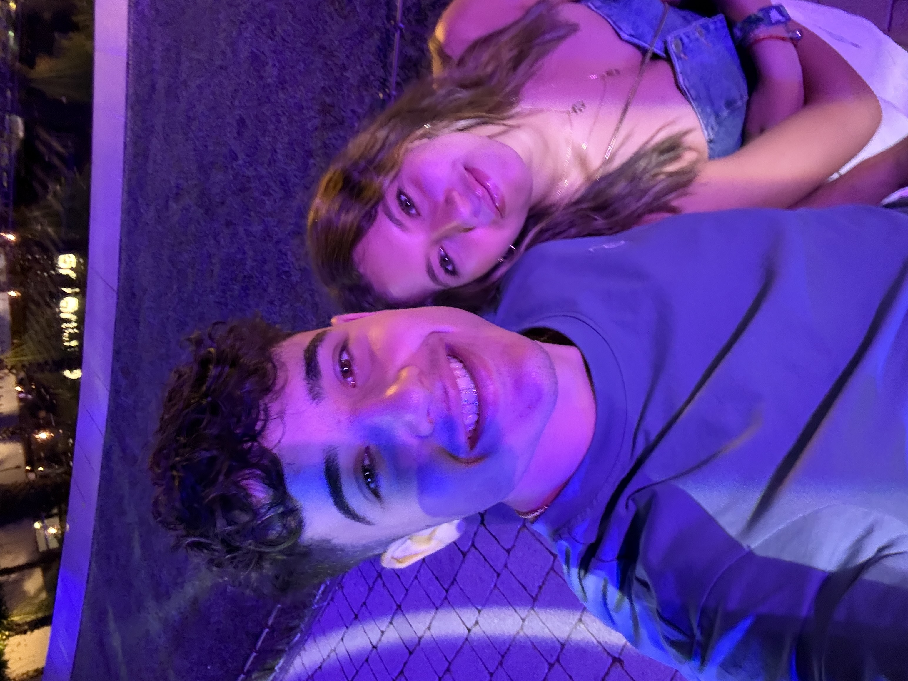

Hola Salma, sé que no te esperabas esto, pero ya tocaba hacer algo bonito ¿no?. Te quiero.

Hola Salma, sé que no te esperabas esto, pero ya tocaba hacer algo bonito ¿no?. Te quiero.
¿Te acuerdas de cuando vimos este búho? ¿Por qué nos haríamos una foto con él? Ahora tiene bastante que ver con nuestra historia.Te explico por qué...

Nah, es broma. Nunca sería capaz de relacionar un búho con nosotros. Pero ahora sí, ¿te acuerdas exactamente de cuando te pusiste una pinza en el pelo y te hice una foto? ¿No? Yo tampoco la verdad. Qué random.No sé porque he puesto esta foto. Perdón.

En fin, si algo vas a aprender con esto es que no te puedes fiar de nadie.. Esto pretendía ser algo romántico y mira. Tienes la misma cara que tengo yo en la foto esta. Seguro que estaba pensando en algún vídeo de YouTube.

Esta fue la última foto que nos sacamos después de 1 año sin sacarnos una foto que no fuera para una miniatura. Nada más que comentar la verdad.
Sobre esta no voy a comentar nada tampoco. Y la razón es que no me apetece... Pero no todo es tan malo como parece, si sigues bajando encontrarás algo que te gustará.Queda poco
Nah mentira, no te fíes de nadie, ya te lo he dicho. Por cierto, las motos de agua fue uno de los mejores ratos que he pasado en mucho tiempo. Y creo que influiste bastante en ello.

Antes de ir a Halloween. Cuando teníamos relación con la gente exterior. Salíamos por ahí y nos teníamos que volver a casa porque no aguantábamos más las ganas de... hablar.

En fin. Un jersey que no he vuelto a ver desde esta foto. Es curioso.
Y como te he dicho antes: No te fíes de nadie. Has estado viendo fotos y leyendo mensajes de mierda que no te han generado ninguna emoción. Lo sé. Pero esto no es todo. La idea era jugar con tu emoción para darte la sorpresa al final. Sigue bajando